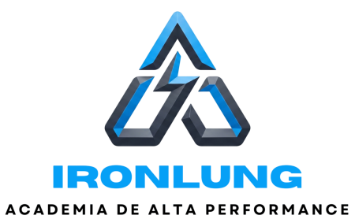
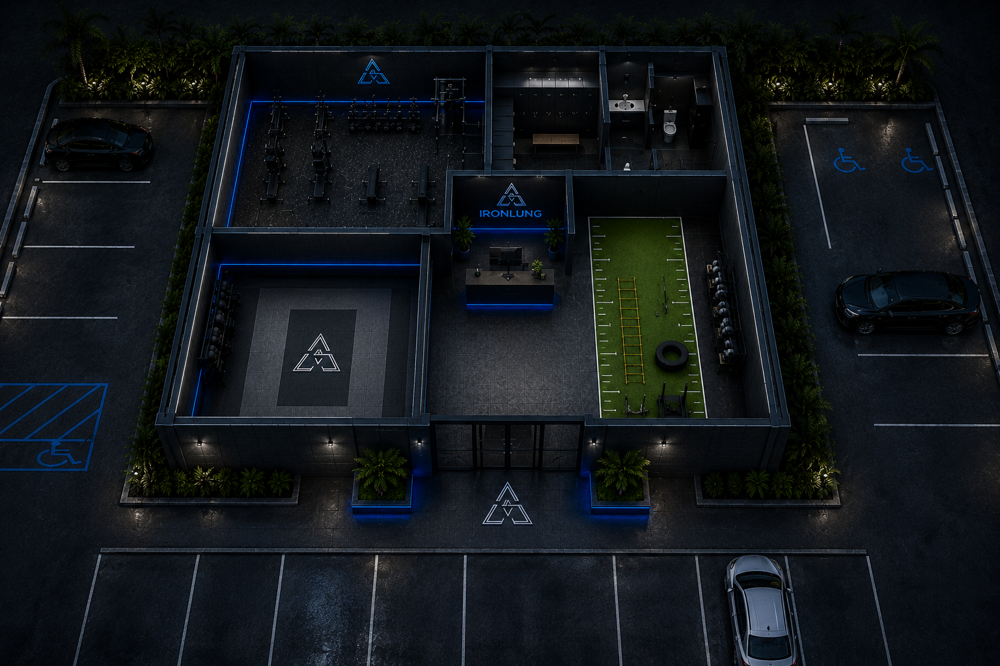
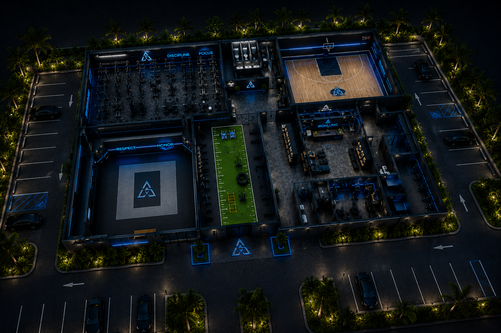

Em 2017, na cidade de João Pessoa, nasceu a IronLung, uma academia com um propósito diferente das demais: formar atletas de alto rendimento de verdade, e não apenas pessoas em busca de estética. Desde o início, a academia adotou um lema que define sua essência: “Seu fôlego. Sua força. Seu legado.”
O projeto começou de forma simples, com poucos equipamentos e um espaço limitado, mas com uma visão muito clara — criar um centro de treinamento completo, capaz de desenvolver atletas profissionais em diversas modalidades.
Nos primeiros anos, a IronLung enfrentou dificuldades comuns a qualquer início: falta de investimento, pouca visibilidade e a necessidade de provar seu valor em um mercado competitivo. Mesmo assim, com disciplina, planejamento e dedicação dos treinadores e alunos, os resultados começaram a aparecer.


O grande diferencial da IronLung sempre foi a integração entre diferentes modalidades esportivas. Atletas de lutas, como judô, jiu-jitsu e boxe, treinavam lado a lado com praticantes de esportes coletivos, como futebol, vôlei e handebol, além de atletas de esportes individuais como natação e corrida. Essa convivência criou um ambiente de alto nível, onde o foco não era apenas treinar, mas evoluir constantemente.
Com o tempo, a IronLung passou a investir em estrutura e tecnologia, criando espaços específicos para cada tipo de treino: área de força e condicionamento, tatame para artes marciais, área funcional e espaços adaptáveis. Isso permitiu um treinamento mais completo e profissional.
A filosofia da IronLung sempre foi baseada em três pilares: disciplina, desempenho e evolução contínua — reforçando que cada atleta constrói não apenas seu corpo, mas também sua história.
Hoje, a IronLung é reconhecida como um centro de referência em treinamento de alto rendimento na região, sendo responsável pelo desenvolvimento de diversos atletas que competem em níveis estaduais e nacionais, carregando consigo o lema que define a academia: “Seu fôlego. Sua força. Seu legado.”